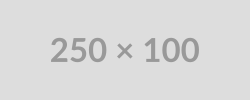

Hello World :)
Eu sou Julia Bacelar
Desenvolvedor Web Front-End
Julia Bacelar
Desenvolvedor Web Front-End

Eu sou a Julia Bacelar, uma estudante de Sistemas para Internet apaixonada por tecnologia, criatividade e estética. Gosto de unir organização e estilo no meu dia a dia, seja nos estudos, na rotina de treinos ou na criação de conteúdos que refletem quem eu sou. Sou curiosa, prática e adoro aprender coisas novas, sempre buscando crescer tanto pessoal quanto profissionalmente.
Minha vibe mistura inteligência, estilo e um toque de humor leve, acredito que é possível ser dedicada sem deixar de se divertir e se expressar. Aqui no meu portfólio, você vai encontrar projetos que refletem minha paixão por desenvolvimento web, design limpo e soluções criativas, sempre com atenção aos detalhes e à experiência de quem usa. Se quiser conhecer mais sobre meu trabalho ou trocar ideias, fique à vontade para explorar o portfólio e entrar em contato!

Aplicação totalmente front-end para ajudar a ONG Mais Amor a capitar possíveis clientes. Tecnologias usadas: HTML/JS/CSS.

Full-stack para gerenciamento de tarefas. Tecnologias usadas: HTML/CSS/JS (front-end) + .NET Core C# (back-end).
Full-stack voltado para o controle de estoque. Tecnologias usadas: HTML/JS + framework Tailwind CSS (front-end) + .NET Core C# (back-end).
Full-stack com simulação de caixa eletrônico. Tecnologias usadas: HTML/CSS/JS (front-end) + Node.js + Express.js (back-end) + SQLite.